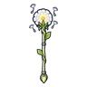

ภูตปุยแดนดิไลออน
มอนธาตุลม Lv 8–18
เจอที่
| แมพ | โซน | Lv | ภูมิภาค |
|---|---|---|---|
| ทุ่งดอกแดนดิไลออนยักษ์ | 8–14 | ป่ากองไฟ | |
| ทุ่งดอกแดนดิไลออนยักษ์ | 10–18 | ป่ากองไฟ | |
| ทุ่งดอกแดนดิไลออนยักษ์ | ดอกแดนดิไลออนยักษ์ | 14–16 | ป่ากองไฟ |
| ทุ่งดอกแดนดิไลออนยักษ์ | ดอกแดนดิไลออนยักษ์ | 16–18 | ป่ากองไฟ |
ค่าสถานะตามเลเวล
| Lv | HP | ATK | DEF | MDEF | EXP | Job |
|---|---|---|---|---|---|---|
| 8 | 703 | 20–30 | 2 | 2 | 16 | 12 |
| 13 | 1,160 | 29–44 | 3 | 3 | 21 | 16 |
| 18 | 1,537 | 38–57 | 4 | 4 | 27 | 20 |
ตีด้วยธาตุไหนดี
แรงขึ้น: ดิน ×1.5 พิษ ×1.25
เบาลง: น้ำ ×0.5 ลม ×0.25
วัตถุดิบที่ดรอป
| ของ | โอกาส | |
|---|---|---|
| เมล็ดปุยลอยลม | 55% | 1 ชิ้น (15% ได้ 2) |
อุปกรณ์ที่ดรอป (1)
| ของ | โอกาส |
|---|---|
 คทาปุยแดนดิไลออน | 0.12% |
สกิล
หลบ (Lv 25+) · หลบ (Lv 60+) · ยิงกระจาย (Lv 60+)